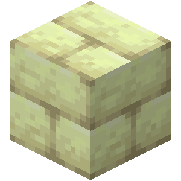
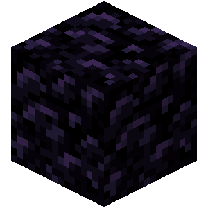
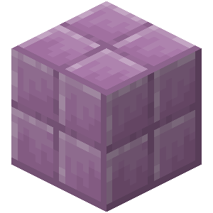

My Favorite Nether Blocks
1. End Brick

- Reason why:
- The End is the only place to obtain this block and has very limited use. It only truly matches itself and obsidian. However, when I build in the End, using this block is logifical as no other blocks match the mood and atmosphere as much as this block.
2. Obsidian

- Reason why:
- This block is found when fighting the Ender Dragon but can also be found in the Overworld when mixing lava and water together. This block matches End Brick very well and are commonly used together when I build. This block is also used to create Nether portals to get to the nether.
3. Purpur Block

- Reason why:
- Purpur Blocks can only be found in naturally spawning End cities scattered around the world. I do not use this block as much in the End but I use it when building with quartz or birch wood in the Overworld.